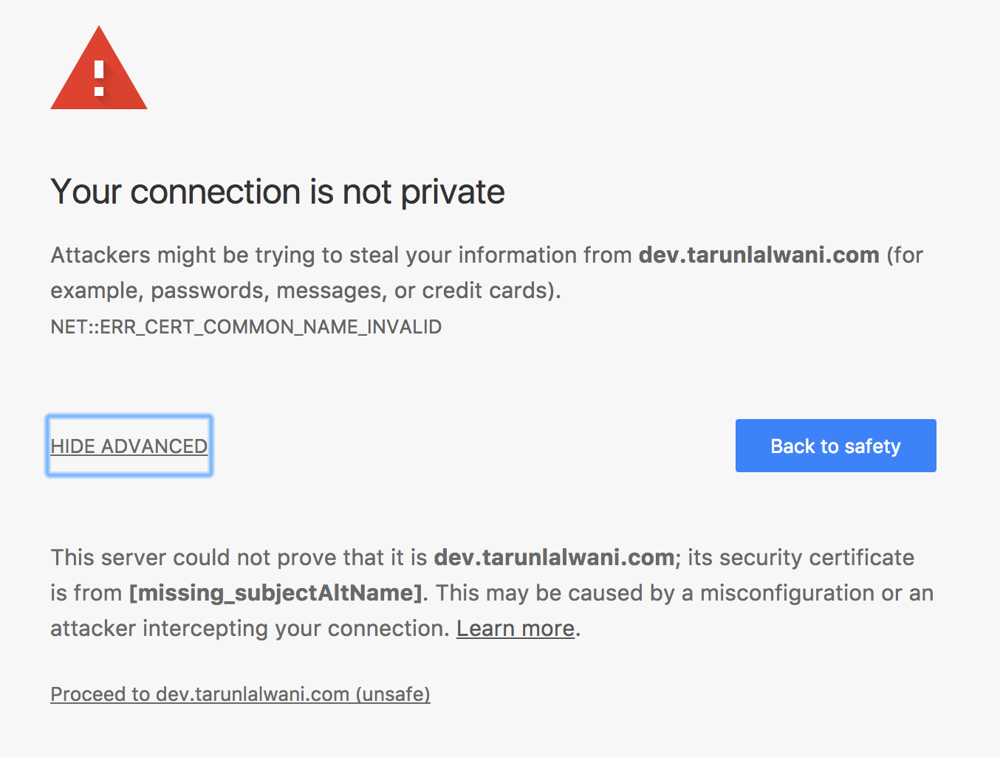
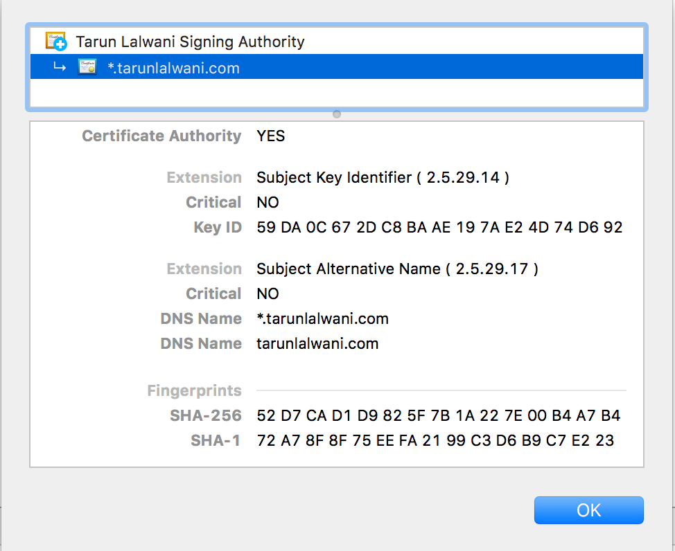

SSL certificates allow us to secure communication between the server and user. Unfortunately SSL certificates are a bit costly and are not prefered to be bought for development environments. This is where self-signed certificates come into picture.
Creating a Self-signed certificate
We can create a self-signed certificate using the openssl command
$ openssl req -x509 -nodes -days 365 -newkey rsa:2048 -keyout selfsigned.key -out selfsigned.crt
Generating a 2048 bit RSA private key
.+++
................................+++
writing new private key to 'selfsigned.key'
-----
You are about to be asked to enter information that will be incorporated
into your certificate request.
What you are about to enter is what is called a Distinguished Name or a DN.
There are quite a few fields but you can leave some blank
For some fields there will be a default value,
If you enter '.', the field will be left blank.
-----
Country Name (2 letter code) [AU]:IN
State or Province Name (full name) [Some-State]:Delhi
Locality Name (eg, city) []:Delhi
Organization Name (eg, company) [Internet Widgits Pty Ltd]:Tarun Lalwani
Organizational Unit Name (eg, section) []:IT
Common Name (e.g. server FQDN or YOUR name) []:*.tarunlalwani.com
Email Address []:
The command would ask certain set of questions depending on the openssl config, once we have answered these questions the certificate would be created
The answer to the FQDN is basically the domain name for which the certificate will be used. The certificate if generated for www.tarunlalwani.com will not work on just tarunlalwani.com. But if we need certificate to work on multiple subdomains then we use a wildcard domain name *.tarunlalwani.com.
These certificates are called wild card certificates. We can even have a multi-domain certificate as well which would list multiple domains in a single certficate. The cost of certificate is dependent on type. With single domain costing the least, then multi-domain and wildcard certificate being the costliest one.
So getting back to the certificate we generated, there are two files that got generated selfsigned.key and selfsigned.crt. The selfsigned.key is a private key and should be secured on the server. The selfsigned.crt is the certificate which is presented to the user.
Testing the certificates using Nginx
Now let us run a simple nginx server using openresty/openresty docker image and use these ssl certificates
nginx.conf
worker_processes 1;
events {
worker_connections 1024;
}
http {
include mime.types;
default_type application/octet-stream;
sendfile on;
keepalive_timeout 65;
include conf.d/*.conf;
}
site.conf
server {
listen 443 ssl default;
server_name *.tarunlalwani.com;
ssl_certificate /certs/selfsigned.crt;
ssl_certificate_key /certs/selfsigned.key;
location / {
add_header Content-Type "text/html";
echo "$request_method $uri $args";
}
}
Then we run the files in a openresty docker image using below command
$ docker run \
-v $PWD:/certs \
-p 443:443 \
-v $PWD/site.conf:/usr/local/openresty/nginx/conf/conf.d/site.conf \
-v $PWD/nginx.conf:/usr/local/openresty/nginx/conf/nginx.conf \
--name ssltest \
-d openresty/openresty
Next we create a host entry of our host IP as dev.tarunlalwani.com and test it using curl
$ curl -k "https://dev.tarunlalwani.com/testme"
GET /testme
Certificate validation and errors
Now that we have used a self-signed certificate, let’s look at some of the validation issues.
CURL
$ curl "https://dev.tarunlalwani.com/testme"
curl: (60) server certificate verification failed. CAfile: /etc/ssl/certs/ca-certificates.crt CRLfile: none
More details here: http://curl.haxx.se/docs/sslcerts.html
curl performs SSL certificate verification by default, using a "bundle"
of Certificate Authority (CA) public keys (CA certs). If the default
bundle file isn't adequate, you can specify an alternate file
using the --cacert option.
If this HTTPS server uses a certificate signed by a CA represented in
the bundle, the certificate verification probably failed due to a
problem with the certificate (it might be expired, or the name might
not match the domain name in the URL).
If you'd like to turn off curl's verification of the certificate, use
the -k (or --insecure) option.
We will get a error. We can ignore all the ssl errors by adding the -k flag, but that means we don’t care what certificate was used. It’s better to be able to validate that it is indeed the certificate that we generated
For curl we can also use --cacert parameter to provide the certificate for validation
$ curl --cacert /vagrant/certs/selfsigned.crt "https://dev.tarunlalwani.com/testme"
GET /testme
Python
Python 2.7.12 (default, Nov 19 2016, 06:48:10)
[GCC 5.4.0 20160609] on linux2
Type "help", "copyright", "credits" or "license" for more information.
>>> from urllib2 import urlopen
>>> req = urlopen("https://dev.tarunlalwani.com")
Traceback (most recent call last):
File "<stdin>", line 1, in <module>
File "/usr/lib/python2.7/urllib2.py", line 154, in urlopen
return opener.open(url, data, timeout)
File "/usr/lib/python2.7/urllib2.py", line 429, in open
response = self._open(req, data)
File "/usr/lib/python2.7/urllib2.py", line 447, in _open
'_open', req)
File "/usr/lib/python2.7/urllib2.py", line 407, in _call_chain
result = func(*args)
File "/usr/lib/python2.7/urllib2.py", line 1241, in https_open
context=self._context)
File "/usr/lib/python2.7/urllib2.py", line 1198, in do_open
raise URLError(err)
urllib2.URLError: <urlopen error [SSL: CERTIFICATE_VERIFY_FAILED] certificate verify failed (_ssl.c:590)>
So in python also we get an error for such a self-signed certificate. We can fix the same by passing the certificate
>>> req = urlopen("https://dev.tarunlalwani.com/testme", cafile="/vagrant/certs/selfsigned.crt")
>>> req.read()
'GET /testme \n'
NodeJS
> req = https.get("https://dev.tarunlalwani.com")
ClientRequest {
.....
}
> Error: self signed certificate
at Error (native)
at TLSSocket.<anonymous> (_tls_wrap.js:1016:38)
at emitNone (events.js:67:13)
at TLSSocket.emit (events.js:166:7)
at TLSSocket._finishInit (_tls_wrap.js:585:8)
To fix this error we need to use the CA file again
> options = url.parse("https://dev.tarunlalwani.com/testme/")
Url {
protocol: 'https:',
slashes: true,
auth: null,
host: 'dev.tarunlalwani.com',
port: null,
hostname: 'dev.tarunlalwani.com',
hash: null,
search: null,
query: null,
pathname: '/testme/',
path: '/testme/',
href: 'https://dev.tarunlalwani.com/testme/' }
> options['ca'] = fs.readFileSync('/vagrant/certs/selfsigned.crt')
<Buffer ... >
> > https.get(options)
ClientRequest {
....
output: [ 'GET /testme/ HTTP/1.1\r\nHost: dev.tarunlalwani.com\r\nConnection: close\r\n\r\n' ],
...
method: 'GET',
path: '/testme/' }
So each language will have a way for you to specify the CA file for validating the certificate.
Now if we replace our url https://dev.tarunlalwani.com by https://www.google.com, all the code samples work without haveing to specify a CA file.
So why does it work for other sites like google, microsoft and not for ours? The reason is that these sites purchase SSL certificate from a signing authority. The signing authority could be certified from another authority. The ones on the top of chain are called “Root Authority”, the sub authorities are called “Intermediate” and the last certificate in the chain is our site certificate.
If you need a more detailed explaination of this, please have a look at this article
Since these public signing authority certificates are already trusted on the system, it is easier for us code against these sites. For our self-signed one we need to adjust our code.
But there is a way for us to trust these certificates on the system and avoid having to change our code for SSL validation.
Trusting certificates on System
Once we trust the certificate on a system, the curl command with validate the certificate directly from system. We will see how to trust the certificate on different OSes
Alpine
$ apk add ca-certificates
$ cp /path/to/certificate/cert.crt /usr/local/share/ca-certificates/
$ update-ca-certificates --verbose
Updating certificates in /etc/ssl/certs...
Doing .
1 added, 0 removed; done.
Running hooks in /etc/ca-certificates/update.d...
done.
Note: The extension of the file should
crt. Also print the file and make sure it’s first line is-----BEGIN CERTIFICATE-----
Once the new certificate is installed the curl command will work without specifying -k or the --cafile flag
$ curl "https://dev.tarunlalwani.com/testme/"
GET /testme/
Ubuntu and Debian
Ubuntu and Debian OS will also work the same way as alpine except that the ca-certificates package will be installed using apt or apt-get
CentOS
CentOS is a bit different in terms of the certificate paths
$ yum install -y ca-certificates
$ cp /path/to/certificate/cert.crt /usr/share/pki/ca-trust-source/anchors/
$ update-ca-trust force-enable
$ update-ca-trust extract
Note: You may need to use sudo for these commands if you are not using the root user
Windows
certutil -addstore -f "ROOT" /path/to/selfsigned.crt
Mac OS X
Mac OS uses keychains and there are multiple chains in a system. You can either add it to the System keychain using below command (accessible to all users on the system)
$ sudo security add-trusted-cert -d -r trustRoot -k "/Library/Keychains/System.keychain" "/private/tmp/certs/certname.crt"
or you can add it to the current users login chain
$ sudo security add-trusted-cert -d -r trustRoot -k ~/Library/Keychains/login.keychain "/private/tmp/certs/certname.crt"
Note: This will make the certificate accepted by curl, but not by Python, NodeJS and few other languages. The reason is that these languages don’t use the Mac OS keychain for validating the certificates. This article wouldn’t go into the details about the same. But see references links for more information on the issue
Self-signed certificate using Root Certificate
We generated and self signed our certificate earlier using openssl command. The problem with this approach is that, every time we generated a new certificate it needs to be trusted individually on the machine.
Instead of generating seperate self-signed certificates for our site, we can generate a Root Certificate and then use that certificate to Sign other cetificates.
Once we have generated a root certificate, we can trust that root certificate on our system. Once the root certificate is trusted every individual certificate that we sign using the root certificate will be trusted automatically.
This makes it possible to generate certificates on the fly, tools like Charles Web proxy, Fiddler use this technique for intercepting SSL traffic.
So now we will look at how to create a root certificate and then generate a certificate signed using our root certificate
Below is a sample shell script to make it easy to generate these certificates
sslcerts.sh
#!/bin/bash
CERT_COMPANY_NAME=${CERT_COMPANY_NAME:=Tarun Lalwani}
CERT_COUNTRY=${CERT_COUNTRY:=IN}
CERT_STATE=${CERT_STATE:=DELHI}
CERT_CITY=${CERT_CITY:=DELHI}
CERT_DIR=${CERT_DIR:=certs}
ROOT_CERT=${ROOT_CERT:=rootCA.pem}
ROOT_CERT_KEY=${ROOT_CERT_KEY:=rootCA.key.pem}
# make directories to work from
mkdir -p $CERT_DIR
create_root_cert(){
# Create your very own Root Certificate Authority
openssl genrsa \
-out $CERT_DIR/$ROOT_CERT_KEY \
2048
# Self-sign your Root Certificate Authority
# Since this is private, the details can be as bogus as you like
openssl req \
-x509 \
-new \
-nodes \
-key ${CERT_DIR}/$ROOT_CERT_KEY \
-days 1024 \
-out ${CERT_DIR}/$ROOT_CERT \
-subj "/C=$CERT_COUNTRY/ST=$CERT_STATE/L=$CERT_CITY/O=$CERT_COMPANY_NAME Signing Authority/CN=$CERT_COMPANY_NAME Signing Authority"
}
create_domain_cert()
{
local FQDN=$1
local FILENAME=${FQDN/\*/wild}
# Create a Device Certificate for each domain,
# such as example.com, *.example.com, awesome.example.com
# NOTE: You MUST match CN to the domain name or ip address you want to use
openssl genrsa \
-out $CERT_DIR/${FILENAME}.key \
2048
# Create a request from your Device, which your Root CA will sign
if [[ ! -z "${SAN}" ]]; then
openssl req -new \
-key ${CERT_DIR}/${FILENAME}.key \
-out ${CERT_DIR}/${FILENAME}.csr \
-subj "/C=${CERT_COUNTRY}/ST=${CERT_STATE}/L=${CERT_CITY}/O=$CERT_COMPANY_NAME/CN=${FQDN}" \
-reqexts san_env -config <(cat /etc/ssl/openssl.cnf <(cat ./openssl-san.cnf))
else
openssl req -new \
-key ${CERT_DIR}/${FILENAME}.key \
-out ${CERT_DIR}/${FILENAME}.csr \
-subj "/C=${CERT_COUNTRY}/ST=${CERT_STATE}/L=${CERT_CITY}/O=$CERT_COMPANY_NAME/CN=${FQDN}"
fi
# Sign the request from Device with your Root CA
if [[ ! -z "${SAN}" ]]; then
openssl x509 \
-sha256 \
-req -in $CERT_DIR/${FILENAME}.csr \
-CA $CERT_DIR/$ROOT_CERT \
-CAkey $CERT_DIR/$ROOT_CERT_KEY \
-CAcreateserial \
-out $CERT_DIR/${FILENAME}.crt \
-days 500 \
-extensions san_env \
-extfile openssl-san.cnf
else
openssl x509 \
-sha256 \
-req -in $CERT_DIR/${FILENAME}.csr \
-CA $CERT_DIR/$ROOT_CERT \
-CAkey $CERT_DIR/$ROOT_CERT_KEY \
-CAcreateserial \
-out $CERT_DIR/${FILENAME}.crt \
-days 500
fi
}
METHOD=$1
ARGS=${*:2}
echo "Called with $METHOD and $ARGS"
if [ -z "${METHOD}" ]; then
echo "Usage ./sslcerts.sh [create_root_cert|create_domain_cert] <args>"
echo "Below are the environment variabls you can use:"
echo "CERT_COMPANY_NAME=Company Name"
echo "CERT_COUNTRY=Country"
echo "CERT_STATE=State"
echo "CERT_CITY=City"
echo "CERT_DIR=Directory where certificate needs to be genereated"
echo "ROOT_CERT=Name of the root cert"
echo "ROOT_CERT_KEY=Name of root certificate key"
else
${METHOD} ${ARGS}
fi
It is very simple to use. To generate the root certifcate, edit the file and update your details.
Generating the Root Certificate
$ ./sslcerts.sh create_root_cert
Generating a Certificate signed using Root CA
$ ./sslcerts.sh create_domain_cert '*.tarunlalwani.com'
The above certificate would not work on Chrome 58 or higher and give below error
This server could not prove that it is dev.tarunlalwani.com; its security certificate is from [missing_subjectAltName]. This may be caused by a misconfiguration or an attacker intercepting your connection.

The issue is that Chrome requires the certificate to have a x509v3 extended attribute Subject Alternate Name. This can be easily achieved by passing our script a SAN parameter
$ SAN=DNS.1:*.tarunlalwani.com,DNS.2:tarunlalwani.com ./sslcerts.sh create_domain_cert '*.tarunlalwani.com'
You can see that chrome shows the two possible DNS names for this certificate and validates our certificate as the Root CA is trusted

References
It took me a time to bring everything into a single article and keep it simple. This article wouldn’t have been possible without below references
- https://stackoverflow.com/questions/19665863/how-do-i-use-a-self-signed-certificate-for-a-https-node-js-server
- http://apetec.com/support/generatesan-csr.htm
- https://datacenteroverlords.com/2012/03/01/creating-your-own-ssl-certificate-authority/
- https://security.stackexchange.com/questions/74345/provide-subjectaltname-to-openssl-directly-on-command-line
- https://support.dnsimple.com/articles/what-is-ssl-root-certificate/
- http://www.cdotson.com/2017/01/sslerror-with-python-3-6-x-on-macos-sierra/comment-page-1/#comment-9697
- https://derflounder.wordpress.com/2011/03/13/adding-new-trusted-root-certificates-to-system-keychain/
- https://stackoverflow.com/questions/7580508/getting-chrome-to-accept-self-signed-localhost-certificate/43666288#43666288
- https://www.sslshopper.com/article-most-common-openssl-commands.html